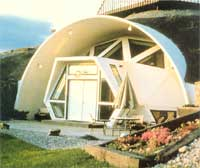
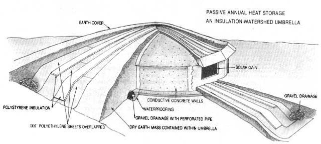
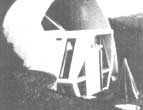
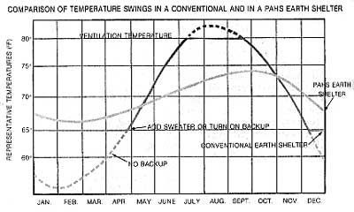

Are you pooped out from paying the power people to pump heat into your home all winter, only to pay them again to pump it back out all summer? If so, maybe it's time to open a special sort of back-to-the-land savings account-one that will let you make energy deposits all summer and withdrawals in the winter. And just where do you put six months of intense seasonal sunshine for safekeeping? To find the answer, you only have to look down, because you're standing on the bank!
As you know, the earth exchanges heat constantly, soaking it up from the sun all summer and giving it up to the atmosphere in the winter. In most areas, this annual flux doesn't level off until a depth of about 20 feet is reached-where the year-round temperature hovers near the average annual air temperature. A 20-foot depth of earth, then, can be a mighty big savings account, and it's dirt cheap. However, to open such an account, you've got to figure out how to make deposits and withdrawals, and you ought to find a way to keep the vault secure from robbers.
What I'm talking about, of course, is passive solar earth sheltering, but not just any old rendition of those now-familiar concepts of energy-efficient construction. Passive annual heat storage is a new approach to using the earth to store solar heat-one that treats dirt surrounding a dwelling as a part of the structure's thermal mass by insulating it from the elements . . . but not from the walls.
The technique calls for a specially designed cap, known as an insulation/watershed umbrella, that's placed a few feet above an underground building's roof (not against it), extending outward to isolate the earth around the structure from the temperature fluctuations of surface layers.
Windows on the south side of the dwelling let sunshine in to heat all the mass within the insulating umbrella. Slowly-ever so slowly over the whole year-a balance is achieved between the warmth of the summer sun and winter heat loss. Thus, an artificial average annual air temperature is established at the junction of the house's walls and the earth. Prevailing temperatures inside the building will be transmitted through the walls and into the earth, extending to a radius of at least 20 feet from the structure. By controlling the amount of sunshine let into the house and the amount of heat rejected (by shading and ventilation), it's possible to adjust the temperature of the surrounding soil with some precision.
Because of the tremendous mass of the building and surrounding soil-a volume of about 45,000 cubic feet (1,800 tons) for the 20 feet beside and below a 30-foot-diameter home-the interior temperature will vary only a few degrees throughout the year. And unless a major change is made in the annual heat-flow balance, it will typically float between about 76°F in the summer and about 70°F in the winter . . . without any additional form of heating or cooling required!
In the past, solar homes haven't been universally practical simply because in many areas the sun doesn't shine enough in the winter. In some areas, such as upstate New York, cloud cover blocks direct radiation on at least two-thirds of the winter days. And farther north-in much of Canada, for example-the few hours between dawn and dusk in January just don't have much heat to offer.
Nonetheless, fine homes have been built that capitalize on winter sunshine to offset a major portion of their heating bills. And some use can be made of solar gain even in the most frigid locales. However, in order to prevent overheating, these conventional active and passive solar homes are forced to discard (by shading) most of the summer's lavish supply of energy. And in a majority of climates, early attempts to use earth sheltering for storage have been thwarted by the need to insulate walls, thus crippling (or eliminating) a dwelling's thermal link with the earth's mass.
Still, these precursors to the passive annual heat-storage system have paved the way by demonstrating the principles of a more efficient form of construction. It's been obvious for years that the earth around an underground structure-even when it's separated by insulation-soaks up heat from the building when the interior temperature rises above that of the soil . . . and that, given the right circumstances, the earth will return heat to the building when the interior temperature drops below that of the soil. Earth-sheltered homes have long been known to have slowly changing temperatures that are largely controlled by the earth around them. The average of this annual flux is often referred to as the floating temperature by people who design and live in such buildings. If the auxiliary heat is kept off, the temperature will assume a certain level that is related to the climate of the area. In the late winter in Montana, for example, a conventional earth shelter might have a floating temperature of around 50-55°F. But oddly enough, the average annual air temperature (and thus the deep-earth temperature) in Montana is only 43-1/2°F!
Many designers at first assumed that an earth-sheltered house would take on the natural soil temperature, but experience has shown that this just isn't the case. Even an "old-fashioned" underground building modifies the temperature of the earth around its walls, because the owners add heat to the building (and therefore to the dirt around it) for comfort. The result is an adjusted floating temperature, and passive annual heat storage's trick is to get that temperature into the comfort zone.
The world's first earth sheltered geodesic dome has achieved that goal! Built in 1981, the Geodome has a polystyrene/polyethylene (insulation/watershed) umbrella that's roughly half the size that we now know to be needed for optimum performance. Despite the minimal size of the protective cap, after its first summer of soaking up sunlight, the Geodome's late-winter floating temperature was 66°F!
Geodome needs to have only 6% of its 3,000 square feet of floor space in windows, which is a lower percentage than either passive solar or conventional construction employs, because the building obtains most of its solar heating during the summer months.
By the end of the first summer after Geodome's completion, an array of 48 sensors buried in the dirt indicated that temperatures 12 feet out from the north wall had risen to 64°F . . . 20°F higher than normal. In fact, the sensor array indicated that the entire ball of earth within the umbrella had very slowly been heated by the solar-heated home that sat at its core.
The following summer, shades were used on the most directly solar-exposed windows, and-naturally-the interior and earth temperatures dropped slightly, so that the late-winter floating temperature hit a low of about 63°F. But, like all good earth shelters, the home was still very energy-efficient: It actually used less energy for space heating than was consumed in warming water for domestic use! And the experiment has proved that the floating temperature of a passive annual heat-storage building is adjustable.
An entire year's worth of heating and cooling (three to five million BTU) can be contained in an area that extends outward about 20 feet from the walls of a house. Furthermore, over this distance the accumulated resistance to heat flow (R-factor) is sufficient to block 90% of the loss.
An umbrella extending 20 feet from the walls is only sufficient, however, if the earth under the umbrella is dry. Though damp dirt has greater heat capacity than dry earth, the greater thermal conductivity of water allows too much heat to escape the confines of the insulated cap. It's inadvisable to build any earth-sheltered home where there's a high water table, and that same restriction applies to a passive annual heat-storage dwelling. But it's also important to protect the earth within the insulating umbrella from surface water; hence, the layers of insulation in the cap are interspersed with water barriers to shunt liquid down the upper surface of the umbrella to a drainage system.
The insulation/watershed umbrella we use in Montana consists of a four-inch-thick (at the center) sandwich of two layers of insulation and three sheets of plastic, which tapers down to one inch in thickness at the outer edge. In addition, we superinsulate (above R-30) the exposed surface of a PAHS building to reduce losses to the air. A good thermal connection between the house and the earth around it is important, so we don't insulate the backfilled portions of the building at all. Doing so would merely force us to overheat the house during summer to drive heat into the earth. As it is, Geodome varies only 6-10°F through the seasons. (Still, we have found that it's a good idea to have shades to adjust the summertime interior temperature.)
Passive annual heat storage leads us to reexamine our basic thinking on heat flow and on the use of earth as a practical thermal storage medium. At the same time, it dramatically widens the horizons of passive solar energy, which for centuries has been hobbled by the fact that the sun wasn't out when work needed to be done.
Now, not only can homes be situated in a constant-temperature environment that will never need auxiliary heating, but the same principles can also be applied to help keep houses cool in hot climates. Or, if a separate 40-to-60-foot ball of earth were insulated and heated with high temperature collectors during the summer, it could provide a year-round-and free -supply of solar-heated domestic hot water. At higher temperatures-say, the 300°F levels possible from parabolic solar collectors-a source of steam for power generation could even be contained in an insulated heat-storage "ball." And, at the other end of the scale, heat could be spilled in the winter from an insulated mass to form a year-round passive refrigerator.
In short, it now is evident that solar technology no longer need be hamstrung by the earth's 22-1/2° tilt: Passive annual heat storage truly takes solar energy out of the dark seasons... and probably out of the dark ages, as well!
EDITOR'S NOTE: John Hait's book Passive Annual Heat Storage: Improving the Design of Earth Shelters (available for $14.95 from Rocky Mountain Research Center, P.0. Box 4694, Missoula, MT 59806) goes into more depth on the construction aspects of PAHS in its 152 pages.
|
 PHOTOS BY THE AUTHOR This geodesic dome is a new type of earth sheltered home. |
 Passive annual heat storage makes more extensive use of the earth as insulation that other earth sheltered home designs. |
 Another photo of the earth sheltered geodesic dome. |
|
 Comparison of temperature swings in a conventional and modified earth sheltered home. |
|
|